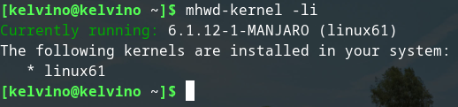
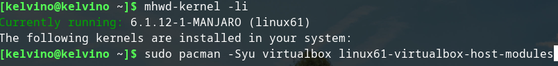
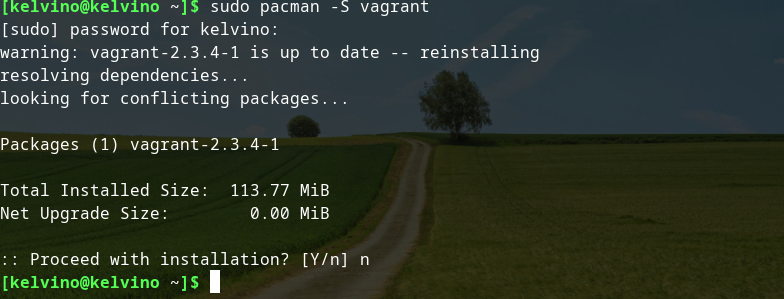
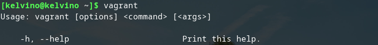
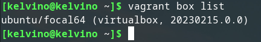

Install VirtualBox
To install VirtualBox, you need to install the packages virtualbox and linux*-virtualbox-host-modules. The latter must match the version of the kernel you are running. To list what kernels is installed use mhwd command.
Now enter the following command to intall a virtualbox and kernel modules for your installed kernel.
Once the installation is complete, you should reboot your computer to add the VirtualBox Module to your kernel.
Install Vagrant
Vagrant is an open-source software product for building and maintaining portable virtual software development environments; e.g., for VirtualBox, KVM, Hyper-V, Docker containers, VMware, Parallels, and AWS. Install the package manager for Linux(Manjaro) using the following command.
I input "n" since I have already installed vagrant but for your case select Y when you are promted to proceed with installation. You can confirm if the installation is successful by running the vagrant command and a drop down of all commands used with vagrant will be displayed. Escape using "q".
Adding Ubuntu/focal64 in Vagrant
First run vagrant box list command to check if you have any boxes in your vagrant. For my case i have already installed the ubuntu/focal64 box but for you it should not list anything.
proceed to add the Ubuntu box using vagrant box add ubuntu/focal64 command. After installation is complete you can use the vagrant box list to confirm the installation was succesful.
Conclusion
You use the vagrant up command to start up vagrant and vagrant status to check the status(Wether its on or off). To turn it off you use vagrant halt . To log in to your ubuntu box use vagrant ssh and to exit from your ubuntu box enter the exit command.